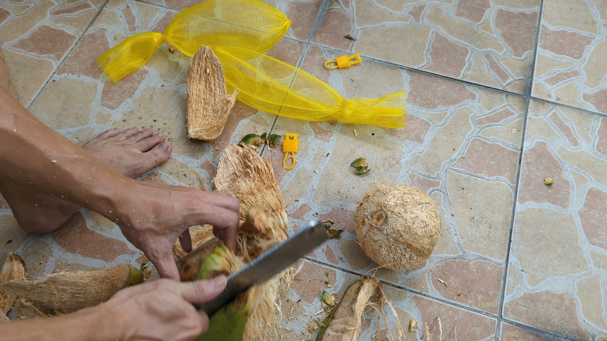
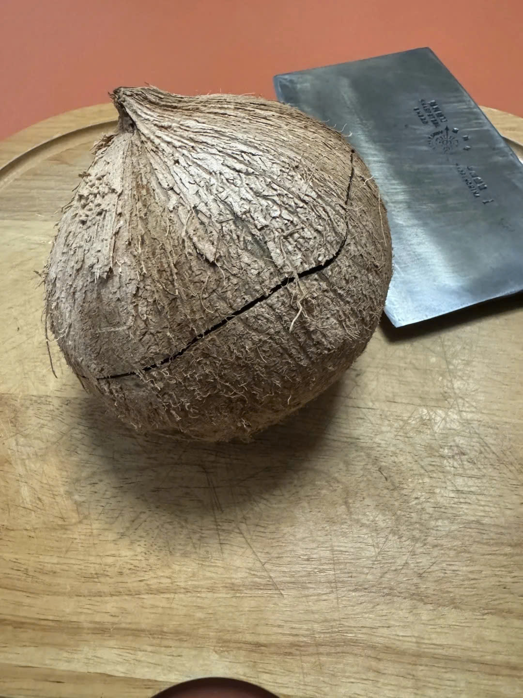
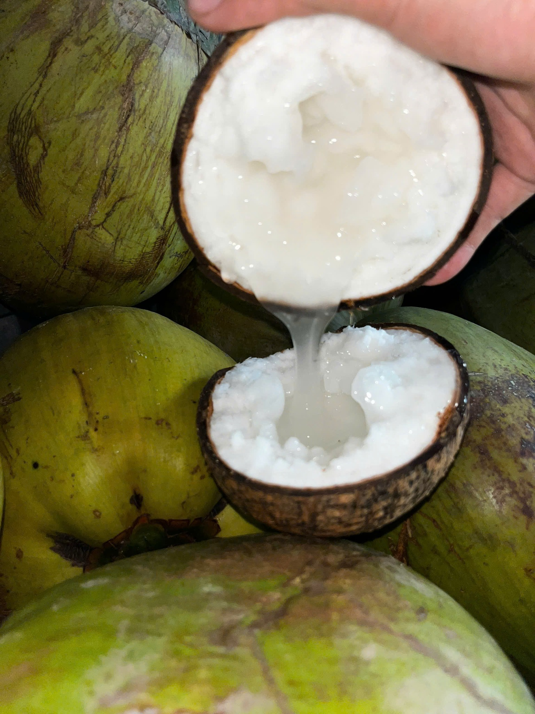
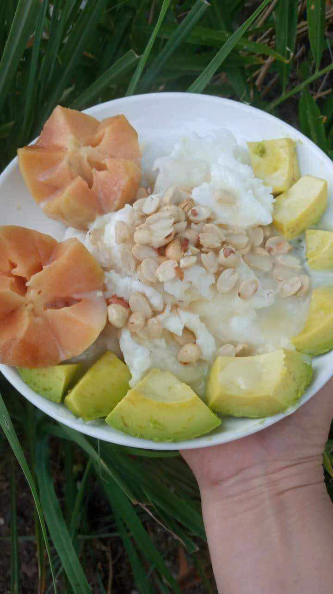
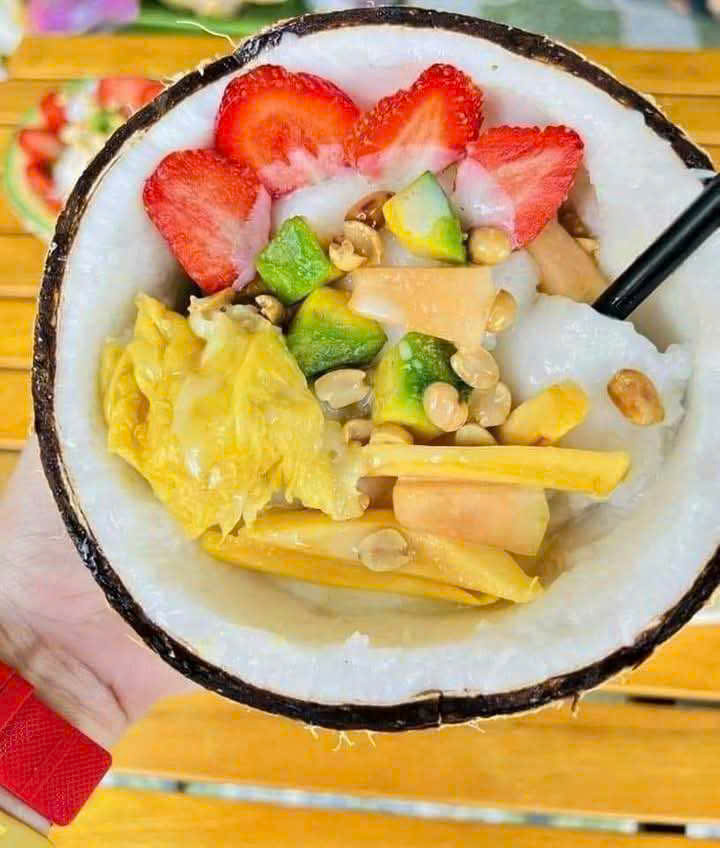

Cách Bổ Dừa Sáp Cực Dễ Trong 30 Giây & 5 Công Thức Dầm Sữa Đá Ngon Chuẩn Quán
✍️ Hướng dẫn bởi: Nhà vườn Dừa Sáp Cầu Kè Trà Vinh • Thời gian đọc: 5 phút
Rất nhiều khách hàng ở thành phố khi nhận thùng dừa sáp Trà Vinh gửi từ nhà vườn lên thấy trái dừa vẫn còn nguyên lớp vỏ xơ bên ngoài thường bối rối: "Sao không gọt trọc sẵn luôn cho tiện, để vỏ xơ vầy lấy dao phay chặt hoài không đứt!". Bài viết này sẽ giải thích lý do nhà vườn bắt buộc phải để lớp áo xơ bảo vệ và bật mí mẹo dùng sống dao gõ nhẹ 30 giây tự nứt đôi gáo dừa cùng 5 cách chế biến ngon quên lối về!
1. Tại Sao Dừa Sáp Gửi Đi Xa Bắt Buộc Phải Để Nguyên Lớp Vỏ Xơ?
Khác với dừa khô hay dừa xiêm uống nước có gáo rất dày và cứng, trái dừa sáp đặc ruột do phần cơm bên trong trương nở dày gấp 3 – 4 lần nên phần gáo nâu bao bọc bên ngoài khá giòn và mỏng. Nếu nhà vườn lột sạch trơn lớp vỏ xơ trước khi gửi bưu điện đi xa:
- Chỉ cần va chạm nhẹ trong lúc vận chuyển là gáo dừa sẽ bị rạn nứt chân chim, không khí lọt vào làm nước dừa bị chua chỉ sau 1 ngày.
- Nhiệt độ nóng trong khoang xe tải sẽ làm trái dừa trọc bị mất độ ẩm, cơm dừa bị chảy dầu và mất mùi thơm tự nhiên.
Do đó, giữ lại một lớp áo xơ vừa phải bên ngoài và bọc túi lưới vàng chính là "lớp giáp bảo hiểm tự nhiên" giúp trái dừa đi từ Trà Vinh ra tới Hà Nội, Lạng Sơn suốt cả tuần lễ vẫn tươi ngọt như vừa hái trên cây!
2. Hướng Dẫn 3 Bước Bổ Dừa Sáp Bằng Sống Dao Trong 30 Giây
Tuyệt đối KHÔNG dùng lưỡi dao chặt thẳng vào lớp xơ dừa vì xơ dừa có độ đàn hồi sẽ làm bật lưỡi dao rất mất sức. Bạn chỉ cần làm đúng 3 bước nhẹ nhàng sau:

Bước 1: Rọc bỏ lớp áo xơ mềm bên ngoài (15 giây)
Đặt trái dừa lên thớt, dùng con dao nhỏ hoặc dao thái thịt rọc nhẹ vài đường theo chiều dọc rồi lột lớp xơ mềm ra (lớp xơ này đã được nhà vườn xử lý mỏng sẵn nên lột nhẹ như bóc vỏ bưởi) cho đến khi lộ ra phần gáo dừa màu nâu tròn trịa.

Bước 2: Dùng "Sống Dao" (Lưng Dao) gõ nhẹ 1 vòng quanh bụng gáo (10 giây)
Một tay cầm gọn trái dừa trên lòng bàn tay (hoặc đặt trên khăn vải), tay kia cầm ngược con dao lớn để dùng phần Sống Dao (lưng dao dày). Bạn gõ lực vừa phải, xoay tròn 1 vòng quanh đúng đường giữa bụng gáo dừa. Chỉ sau 4 – 5 nhịp gõ, bạn sẽ nghe tiếng "tách" giòn tan và đường nứt chạy thẳng một vòng tròn cực đẹp!

Bước 3: Tách nhẹ hai nửa gáo dừa & Hứng nước kẹo (5 giây)
Đặt một chiếc tô sạch ở dưới, dùng hai ngón tay cái ấn nhẹ vào vết nứt để mở đôi trái dừa ra. Lúc này lớp nước sáp kẹo kéo sợi và hai nửa cơm dừa trắng ngần sẽ lộ ra trọn vẹn mà không rơi vãi một giọt nào!
3. 5 Công Thức Chế Biến Dừa Sáp Ngon Quên Lối Về
Một trái dừa sáp Size Vừa (1.0 – 1.3kg) khi nạo ra có thể chế biến được từ 4 đến 5 ly lớn cho cả gia đình cùng thưởng thức. Dưới đây là 5 cách ăn ngon nhất:
🍧 Món 1: Dừa Sáp Dầm Sữa Đá Đậu Phộng + Tắc (Chuẩn Vị Cầu Kè)
Nguyên liệu: Cơm dừa sáp cắt miếng hoặc nạo sợi, 3 muỗng sữa đặc, 1 muỗng đậu phộng rang giòn, đá bào và 1/2 trái tắc (quất) nhỏ.
Bí quyết nhà vườn: Khi dầm cơm dừa sáp với sữa đặc và đá bào, bạn hãy vắt vào 2 – 3 giọt nước cốt tắc (bỏ hạt) và thả luôn vỏ tắc vào ly. Tinh dầu vỏ tắc thơm lừng sẽ cân bằng hoàn hảo độ béo ngậy của dừa sáp, ăn 2 ly liền vẫn không hề ngấy!

🥑 Món 2: Dừa Sáp Dầm Bơ Tươi (Hoặc Sinh Tố Bơ Dừa Sáp)
Xắt hạt lựu nửa trái bơ sáp chín mềm trộn chung với cơm dừa sáp, nước kẹo, sữa đặc và đá bào. Vị béo bùi của bơ hòa quyện cùng sự dẻo quánh sần sật của cơm dừa sáp tạo nên món tráng miệng bổ dưỡng số 1 cho trẻ nhỏ và người lớn tuổi.

🍓 Món 3: Dừa Sáp Mix Trái Cây Nhiệt Đới
Kết hợp cơm dừa sáp với mít Thái xé sợi, xoài chín, dâu tây, thanh long đỏ và một hộp sữa chua có đường. Vị chua ngọt thanh mát của trái cây tươi quyện trong lớp sáp dẻo mịn giúp đẹp da, giữ dáng.
🥤 Món 4: Sinh Tố Dừa Sáp Sữa Tươi Đá Xay
Cho 1 chén cơm dừa sáp, 100ml sữa tươi không đường, 3 muỗng sữa đặc và 1 ly đá viên vào máy xay sinh tố bấm xay nhuyễn trong 30 giây. Thành phẩm sánh mịn như kem tươi (Smoothie), rót ra ly rắc thêm dừa khô hoặc đậu phộng.
🍦 Món 5: Kem Dừa Sáp Túi / Hộp Cấp Đông
Nếu nhà ăn không hết trong một lần, bạn trộn sẵn cơm dừa sáp + sữa đặc + sữa tươi + đậu phộng, chia vào các hộp nhỏ hoặc túi zip đặt lên ngăn đông tủ lạnh 4 tiếng. Khi lấy ra ăn sẽ dẻo mịn y hệt kem nhãn, kem bơ cao cấp!
4. Cách Bảo Quản Dừa Sáp Giữ Trọn Vị Béo Ngậy (7 - 30 Ngày)
- Khi chưa bổ gáo (Còn nguyên vỏ xơ): Để trái dừa ở góc nhà thoáng mát, khô ráo, tránh ánh nắng trực tiếp hoặc gần bếp nóng. Bảo quản thoải mái từ 7 đến 10 ngày.
- Khi đã gọt sạch vỏ xơ (Chưa đập gáo): Đặt nguyên gáo dừa vào ngăn mát tủ lạnh, dùng trong vòng 5 – 7 ngày.
- Khi đã bổ đôi gáo dừa: Dùng muỗng nạo toàn bộ phần cơm dừa và nước kẹo cho vào hộp nhựa/thủy tinh đậy kín nắp. Để ở ngăn mát tủ lạnh dùng trong 3 – 4 ngày, hoặc đặt vào ngăn đông đá bảo quản được tới 30 ngày (khi ăn chỉ cần rã đông tự nhiên 15 phút là cơm dừa dẻo lại như mới).